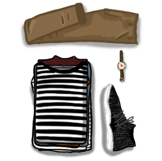

Keep a simple, clean style.
Pair like colors with like, and accent with one or two colors. Monochrome is always a great option. If colors are opposites, they make great accents.
ex. B&W striped T-shirt, grey jeans, athletic shoes, and a red jacket.
ex. Orange shirt, navy chinos, NASA vans, navy peacoat.
Use dress (i.e. fancy) shoes more often. Brown shoes = brown belt. Brown goes well with blues, grays, and other brown colors (gold and burnt orange). Black only goes well with black or red or white, but brown also goes well with white.
If you want to wear something more comfortable, a basic tee, track pants, and athletic shoes will always look great paired with a tench coat and/or hoodie.
Accessorize. Little things can go a long way. Ideas of accessories:
- analog watch
- colorful/accent socks
- glasses
- bags/backpacks
- rings
- necklaces and bracelets.
Don’t be afraid to add color or experiment, your style is your own.
STYLE LOG
01/07/2019
Adidas pants,B&W striped embroidered shirt, CMU jacket, grid socks, VESSI shoes,